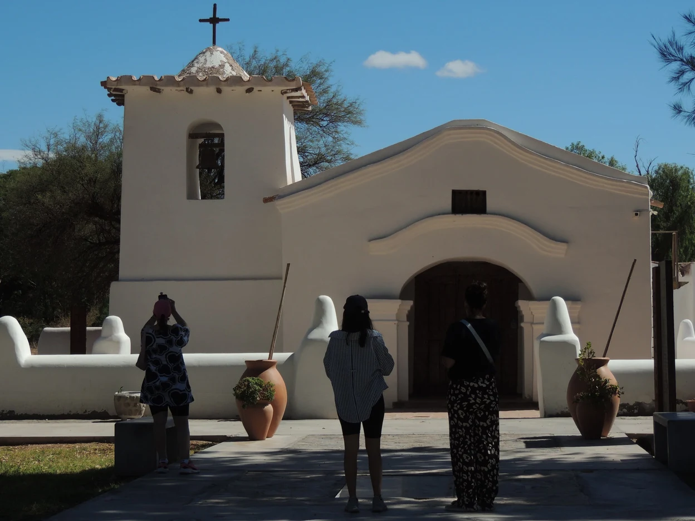
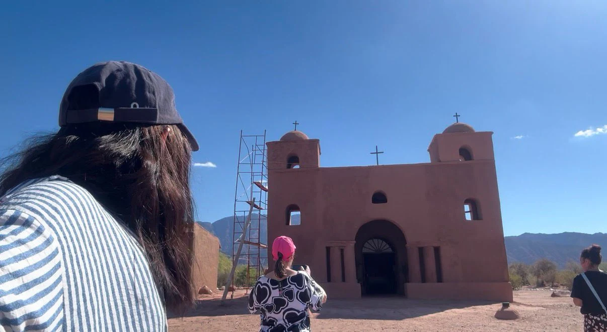

Desplegando el mapa…
Una expedición interactiva por Catamarca
Siete lugares de adobe. 55 kilómetros entre Tinogasta y Fiambalá. Un avión de papel. Descubrí la historia de cada lugar y prepará tu viaje real.
— presioná ENTER —


Proyecto de promoción turística · Departamento Tinogasta, Catamarca, Argentina
PARADA 01 / 07
Del viaje virtual al camino real. Todo lo que necesitás para recorrer la Ruta del Adobe.
También hay hosterías y alojamientos en Tinogasta y en Fiambalá, al final del recorrido. Consultá tarifas y disponibilidad antes de viajar.
Abrí el recorrido completo en Google Maps, con todas las paradas desde la Casa Grande hasta la Comandancia de Armas, o descargá el mapa ilustrado para guardarlo, compartirlo o imprimirlo.
Confirmá horarios, aperturas y accesos con las oficinas de turismo de Tinogasta y Fiambalá antes de viajar.
Elegí la Ruta del Adobe porque es un destino que me gusta mucho y al que tengo la posibilidad de regresar cada cierto tiempo. Cada vez que lo visito encuentro nuevos aspectos que me llaman la atención y hacen que la experiencia sea diferente. Es un lugar que me fascina tanto por sus construcciones y paisajes como por la historia y la cultura que representa.
Además de mi interés personal, considero que la Ruta del Adobe posee un importante potencial turístico, ya que cuenta con recursos patrimoniales que pueden ser valorizados y promocionados como parte de una experiencia turística auténtica dentro de la provincia de Catamarca.
Presentar la Ruta del Adobe no solamente como un recorrido para observar construcciones antiguas, sino como una experiencia cultural, donde el visitante pueda conocer, interpretar y valorar el patrimonio local.
La ruta permite excursiones de medio día o día completo, combinadas con otros atractivos de Fiambalá y Tinogasta, e incorporar a prestadores y comunidades locales mediante guiado, gastronomía regional, artesanías y actividades vinculadas con la cultura local.
El mapa y el avión son recursos ilustrados e interpretativos: no son cartografía de navegación. El recorrido real se hace por tierra. Fotografías: presentación original del proyecto.
Activá JavaScript para jugar la expedición por la Ruta del Adobe.